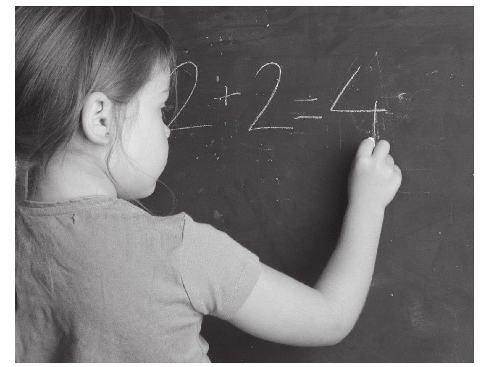

多年以前我曾旁听了一堂使我终生难忘的数学课，那时有很多人推荐我去拜访这位本领不凡的数学老师，于是我怀着激动的心情来到了教室门口并敲门。由于无人应答，我随即推开门向教室里面走去。
Emily Moskam老师的数学课堂不像我之前旁听过的数学课堂那样安静。我看到一群正值青春期的高大男孩正站在教室前方，一边解题一边开心地说笑着，其中一位男孩正在兴高采烈地与大家分享着他的解题思路与技巧。阳光透过窗户洒满教室，前面的讲台在照射下如同光影四射的舞台一般。我迅速地穿过屋内过道找好座位就座。
Moskam老师觉察到我的来访，轻轻地向我点头示意。此时所有学生的目光都集中在教室前方的黑板上，以至于根本没有注意到我刚才的敲门声。黑板上这道题的大致内容是，计算一位滑板运动员从圆形旋转平台边缘某处脱离后滑向至对面缓冲墙面的时间。这道题目比较复杂，因为它涉及许多高年级才会学到的数学知识。虽然没有人能计算出结果，但是却有很多学生踊跃地表达了他们的想法。
在这群大男孩讲解完毕后，又有三位女孩走到讲台前补充刚才男孩们所阐述的观点，并将其延伸讨论。Ryan，一位高个子男孩，在自己的座位上问道：“你们接下来打算怎样求得最终结果呢？”三位女孩随后解释了她们的想法：首先需要计算出滑板运动员的滑行速度，再尝试找出运动员脱离旋转轨迹时的位置，最后计算出运动员滑行至缓冲墙面的距离。
这种课堂教学模式激发了学生的学习热情，拓宽了思考的维度。学生们各自以小组或者个人的形式到讲台前分享着他们的解题思路。在十分钟内，全班学生运用三角函数和平面几何的知识，并且结合相似三角形和切线的有关法则成功地解答了这道题。所有学生通力合作，就像是一台经过充分磨合的机器那样高速运转，通过共享各自独有的思路朝着同一目标迈进。面对这道难题，学生们的精彩表现让我留下了深刻印象。（这道数学题的完整解题过程，还有本书后面提及的其他数学题目，在附录中均可找到标准答案。）
这堂数学课的神奇之处在于：学生们通过集体讨论共同解答了这道数学题，而不是通过老师的讲解来完成解题过程。可以说几乎每一位学生都对题目的解答做出了一定贡献，这使得他们每一个人都会感到激动与自豪。每位学生在分享自己观点的时候，其他学生一边聆听，一边在原有基础上不断拓展并完善自己的解题思路。
传统的数学教学通常是以老师讲解为主，学生们在安静听课的同时反复地练习老师传授的解题思路；新式教育改革拥护者们认为学生应该积极参与到课堂教学当中，通过自主地表达各种想法去解决问题。那些固守于“传统教育阵营”的人总是担心，这种以学生为主的教学方法会或多或少地对数学方法的标准性、准确性以及在学生升入高年级后的教学质量产生不利影响。但是这堂数学课却是能够让持有不同教育观点的各方均能满意的完美例证。因为从事实来看，学生们能够很熟练且严谨地运用本应在高年级掌握的数学方法来解题，同时他们还被允许在课堂上以自己喜爱的方式去解题：或独立思考，或集体讨论。有的学生在课后说：“我喜欢上这种课！”周围的伙伴们也纷纷点头表示赞同。
十分不幸的是，几乎没有数学课能够达到像Moskam老师这样的效果，而无法达到这种教学效果的原因正是美国数学教育的顽症。大多数学生对数学的厌恶情绪源自他们内心深处的恐惧与焦虑。正是因为缺乏良好的数学基础，使得他们在修完基础课程后尽量避免继续学习数学，这将间接对医药、科学、工程学等领域的进一步发展构成严重威胁。我们通过以下实例来说明这令人不寒而栗的事实：
孩子们的数学成绩与学习兴趣依然很低，但是问题的根源并不在这里。许多成年人对数学同样持有厌恶的情绪，这与他们童年在学校的经历有着极大关系，他们中有不少人不惜一切代价，在工作和生活中尽量避免跟数学有任何交集。但是随着新兴科学技术的不断涌现，这些成年人不得不重拾数学知识才有可能在社会上立足。不仅如此，如果美国人能够忘记过去在学校时的那些经历，并且以一种另外的视角重新认识数学，而不是把记忆停留在课堂上见到的各种稀奇古怪的图形上面，那么数学也许会回馈给他们丰厚的收获和无限的欢乐。
每当我告诉别人我是一名数学教授时，他们总会表现出无比的诧异与错愕，甚至他们会觉得数学是自己的最大命门。每当我听到别人如此评价数学时心中不免有些遗憾，因为我知道他们在课堂上所接受的数学教育是那么不堪回首。我最近采访了这样一群年轻人：在学校时他们痛恨学习数学，但在工作中他们又发现数学其实非常的有趣，他们中甚至有人在工作之余开始研究数学谜题了。这些人不禁产生疑问：这么有趣的一门学科为什么会在学校课堂上变得如此索然无味？
这种对数学的厌恶情绪同样出现在美国的流行文化当中。在动画片《辛普森一家》中曾有过这样的情节：Bart在学期期末将教材交还给老师的时候，老师发现数学教科书依旧像领取时那样整洁。“这些书并没有翻动过啊！”Bart的这句感慨同样映射出了一些相同年龄段的学生的心声。芭比娃娃开口说出的第一句话也许正是从她们的消费者那里获取的灵感：“数学课真是太烦人了！”不过后来由于这句话遭到了数学老师和女权主义者的强烈抗议，制造商们不得不迅速对玩具做出相应调整。
其实上述的情况并非个案。在2005年，一项民意调查发现了一个令人震惊的事实：每10名成年人中就有4名表示上学时厌恶数学，这项比率要高于对其他学科厌恶程度的2倍。
尽管如此，我们却有足够证据表明数学以其独特的潜在之美足以引发人们的兴趣。比如说近几年来以数学为题材的电影作品，如《美丽心灵》《心灵捕手》《证明我爱你》等。另外有关数学方面的书籍同样也很畅销，比如《费马大定理》《圆周率（π）》等。值得注意的是，数独游戏最近受到了追捧。数独的基本模式是在一个由3行3列构成的正方形格子中填入数字1至9，每个数字只能使用1次。在美国的任何一个地方，不论是在工作场所或是休闲场所中，你都能找到那么一群人沉浸在这种由小格子组成的游戏中。数独可以锻炼人的逻辑思考能力。
这种流行趋势反映了一个有趣的事实：在学校数学被普遍厌恶，而在工作、生活以及休闲时，数学又是那么的有趣。数学在美国人的生活中具有两面性：有在学校课堂上晦涩难懂、无聊透顶的一面，也有在工作与生活中充满惊喜、欢乐无穷的一面。我写这本书主要是向现在的学生展示数学积极的一面，使他们对数学产生兴趣，为他们将来的发展打好基础。
现在的年轻人在将来的工作与生活中应该具备怎样的数学能力呢？Ray Peacock先生是英国菲利普斯实验室的研究主管，这位受人尊敬的雇主指出从事高科技相关方面的工作所需具备的几点素质：
像Peacock博士这样，看重具有灵活处理实际问题能力的人并不在少数。一项关于手工制造与信息技术企业雇主的调查显示，企业更青睐于具有统计学、立体几何、系统性思维和估值技术等多种综合能力的年轻人才。
数学知识技能不仅仅是一名工作者在未来工作中所必备的专业素质，也是使他在未来生活更加美好的成功诀窍。就像Forman和Steen所说的：“目前的新闻并不仅仅将问题用定性描述作为主要手段，同样少不了数学语言的补充（比如图形、百分比、图表等）。”不论是浏览网页、分析数据、计算财政支出甚至是参加竞选，在21世纪人类生活中数学的身影几乎无处不在。
但是人们所需要的数学知识又与课堂上所学到的数学知识存在一定区别。人们所需要的数学知识不是重复那些标准化的公式，而是需要在全新环境下运用有关方法去理性思考与解决问题。数学对于美国人来讲十分重要，以致有人将其视为一种新的民事权利[4]。如果年轻人希望自己能够强大起来，成为生活的主宰者，那么他们就需要具备一些数学素质：逻辑思考能力、比较能力、分析能力以及推理能力[5]。
《商业周刊》曾发表声明说：“世界正在步入数字信息时代的新纪元。”数学的课堂教育不仅要跟上未来求职节奏的步伐，还要让学生们体会到数学之美，为他们的将来发展打下基础。
研究者们发现，成年人在生活中面对数学问题时游刃有余，不过他们几乎并没有用到在学校时学到的数学知识。在我们的生活中，比如在街边市场和商店，每当消费者购买商品时，往往很少用到在学校学到的那些计算方法和程序，而是往往依据周围的实际情况并结合自身经验判定总结出计算方法[6][7][8][9]。加利福尼亚（以下简称“加州”）大学伯克利分校教授Jean Lave发现，消费者们在购物时，运用他们自己独创的计算方法能够做出很好的消费决策，而这些都不是从学校学来的。
无独有偶，节食者们同样运用“非常规”的方法计算出每一顿伙食的营养摄入量。举个例子，当一位节食者说他一次可以吃2/3杯松软干酪的3/4部分时，千万不要以为他是运用标准的分数乘除法计算公式得到的结果。实际上他是将这2/3杯的干酪倒在面板上，将干酪拍打成圆形，并以圆心为基准画十字，之后把其中的1/4拿掉，剩下的就是干酪3/4的部分了[10]。Lave教授在研究中发现了许多诸如此类“非常规”计算方法的例子，这看起来与学校学到的方法没有半点关联。
读到这里，读者们都会不自觉去联想现实生活中使用各式各样的独创数学方法的例子，或多或少会在自己身上找到一些影子。成年人几乎不会循规蹈矩地去记一些数学公式，所谓真正成功运用数学的人，能够做到因时因地，结合各种条件灵活地调整运用那些固有的运算法则。
其实真正的数学世界与学校课堂上所讲解的数学是完全不同的，年轻人在接受学校的数学教育后，并不能很好地应对今后工作和生活中的实际问题。即使对于那些依旧在学校学习的孩子来讲，陪伴他们度过青春期的是那些与实际应用毫无关联的数学理论知识。作为此次对英国数学教育调查研究的一部分[11]，我对一些接受传统数学教育的学生进行了访谈，同时还对一些接受以现实问题为导向的新式教育的学生进行了访谈，并记录了他们是如何把数学知识应用到实际工作中去的。接受传统教育的学生纷纷表示，走出校园后用到数学的地方确实不少，但是从来没有用到过在课堂上学到的那些知识，他们觉得有一道明确的分界线将数学课堂与现实生活划分开；而对于那些接受以现实问题为导向教育的学生来说，在学校获取的知识可以与现实生活很好地衔接，因此掌握的知识在工作与生活中能够得到很好的发挥。
我们应该如何学习数学呢？那些在数学课堂上由于学习不顺利而自尊心大大受挫的孩子，他们的学习方法需要极大的调整；那些由于课程乏味冗长而早已失去学习兴趣的孩子，也需要调整学习方法。为了国家未来的发展，我们迫切需要一批拥有数学才能的有识之士，在科技、医药、工程学等多个领域贡献出自己的力量。关于数学教育的问题，有许多尚待解答，这本书的写作目的是为家长以及教师们提供数学教育的新方法、新思路，以帮助孩子们更好地掌握知识并快乐成长，为国家的未来发展积蓄力量。
我们需要将数学重新带回课堂上以及孩子的生活中，这是我们亟须正视并着手解决的问题。在本书中，我所强调的课堂教学的关键点并非“传统”与“改革”这两种教育模式的争论，由于把数学教育变得模式化使这种争论会随时随地出现在任何课堂和家庭中。我们的孩子现在需要的是学会去处理复杂问题，提出各种形式的疑问，能自主地使用、调整、改善那些标准化方法，以及将实际问题数学化（即数学建模）并建立切实可行的计算方法。以上这些能力在家庭和学校里都可以进行培养（有部分人希望开设专门的培训机构）。
让我们再一次把镜头拉回到开头所讲述的Moskam老师的数学课堂上。其所在的公立高中Greendale[12]的数学课给予了学生接受传统教育和“以问题为导向”教育的选择。当我带着一位斯坦福大学的资深教授去旁听Moskam老师的授课时，该教授用“神奇”这个词表达了这堂课对他的震撼。老教授的这种惊讶并不会使我们感到意外，Moskam以其高超的教学水平获得过多项奖励，她的学生中有许多人从事与数学相关的专业工作。
但最让我感到惊讶和难以接受的是，在我旁听了这堂课后不久，Moskam被责令不允许再用这种方式授课。一小群家长试图说服别人：数学教育只能采用传统方法，即学生们安静地坐在座位上听老师讲授知识，并且不会被要求去解答各种复杂问题。从此之后，Greendale高中的数学课开始变得和以前不同了。从某种意义上讲，20世纪50年代后的数学课堂教育模式基本是一致的：教师们站在前面讲解知识，学生们在自己座位上独自安静地做着练习题。学校已经不再将Moskam这种“以问题为导向”并在学生身上取得成功的教学方法作为备选教案了。
我对孩子的数学学习进行了纵向调查研究，这种纵向研究比较少见。一般情况下，研究者们会依据课堂上某一特殊时间段内孩子的表现来了解他们的学习情况，但我却花费了数年时间，调查几千名美国和英国中学生的学习情况，进而发现他们学习的转变过程。
在我的研究中，我将重点放在学生们是如何开展数学学习上面，发现并找出哪些方法是对他们有利的，哪些方法是不利的。在2005年的夏天，我与自己的研究生们来到加州的一所中学给学生们讲数学课。班上的学生比较特殊，他们厌恶学习数学，并且以往的成绩不是D就是F。刚开始的时候学生们都表示不愿意上数学课，而当课程结束时他们又表示喜欢上数学课，这前后的反差证明了我的团队成功转变了他们对数学的学习态度。一个男孩告诉我们，如果学校老师也能够像我们这样教数学的话，他宁愿每天都只上数学课。另一个女孩告诉我们，以前数学课给她的感觉非常单调，用颜色来形容的话就是非黑即白，而我们讲的数学课带给了她彩虹般的体验感。
事实上，我们的数学课并没有任何新奇的方法，只是和学生一起去简单地探讨数学。我们通过一些有趣的数学题来展现代数在实际中的应用，就像下面的棋盘问题：
每一位成功的教师都有着自己一套独特的教学方法。而数学成绩优异的学生并不像别人所想的那样生来就具有优秀的数学基因，其实他们也有一套不错的学习方法。对于那些取得更高数学成绩的学生来说，他们很可能受到了知名教师、身边榜样、家庭熏陶、特殊的学习方法等因素的影响，我将会在书中提及。
基于对几千名学生跟踪研究得到的成果，本书阐述了美国学生学习数学时所面临的问题，书中会分享一些应对办法。我知道很多父母同样惧怕数学，他们认为自己不能给予孩子充分的帮助，甚至连关于数学的简单沟通都做不到。这种情况在学生们开始升入高中时尤为明显。不过还是有一些数学训练，在不需要大量数学知识的情况下，由家长和孩子们在家里就可以完成的。有关开展这些活动所需要的数学知识与相应的学习方法我会在书中与大家分享。
当然数学课堂同样需要提升教学质量，本书会为家长们提供一些数学基础知识，以便他们间接地帮助提升课堂教学质量。如果孩子们能够以一种不同的方式去学习数学，那么他们将来很可能在数学领域取得成功。我希望这本书能够重新点燃那些被数学“伤害过”并对其恨之入骨的人的学习兴趣；鼓舞那些已经很热爱数学的人继续努力；引导那些有志于投身数学教育的人，为其指明前进方向。